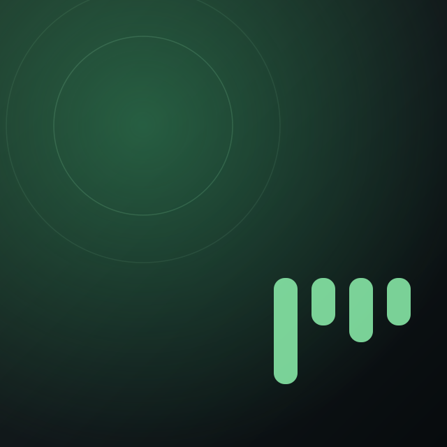

Motion that explains
where things came from.
minitify is a floating AppKit panel with nowhere to hide: it sits over your work, so anything that moves has to earn the attention it takes. This is the whole system — eleven behaviours, each one a live demo at the size it ships at, with its beat map, its exact duration, its curve in both CSS and Core Animation, what deliberately stays still, and what happens under Reduce Motion. Nothing here needs a third-party library; every demo names the native API that carries it.
The vocabulary
Five curves and four duration bands. Every feature below uses one of these; nothing is improvised per-screen.
| CURVE | CSS | CORE ANIMATION | WHERE IT IS USED | |
|---|---|---|---|---|
| Enter | cubic-bezier(0, 0, .2, 1) |
CAMediaTimingFunction(controlPoints: 0, 0, 0.2, 1) |
Anything arriving: reveals, popovers, fades in, thumb grow. | |
| Exit | cubic-bezier(.4, 0, 1, 1) |
CAMediaTimingFunction(controlPoints: 0.4, 0, 1, 1) |
Anything leaving. Always ~60–70% of the matching entrance. | |
| Standard | cubic-bezier(.4, 0, .2, 1) |
CAMediaTimingFunction(controlPoints: 0.4, 0, 0.2, 1) |
In-place changes: tint, bounce, a value sliding to a new state. | |
| Panel | cubic-bezier(.32, .72, 0, 1) |
CAMediaTimingFunction(controlPoints: 0.32, 0.72, 0, 1) |
Geometry: window resize, mode switch, queue reveal. Leaves fast, lands soft. | |
| Settle | cubic-bezier(.22, 1.1, .36, 1) |
CASpringAnimation(mass: 1, stiffness: 320, damping: 26) |
Only where something physical comes to rest: the drag clamp, a released slider thumb. |
The bands
A floating overlay is read in a glance. Only the launch story is allowed to take its time.
| 120–160 ms | Acknowledgement. Press feedback, hover reveal, a thumb growing under the pointer. Fast enough that it reads as the control responding, not animating. | |||
| 180–250 ms | Symbol and state. SF Symbols .replace and .bounce, accent tint, popover open. The macOS default band. | |||
| 240–380 ms | Geometry. Window resize, mode switch, queue reveal, the clamp back inside the frame. Anything where the eye has to follow a shape to a new place. | |||
| 3600 ms | Launch only. The mark plays its four beats once while the player connects; nothing else on the page is allowed near this length. | |||
Launch
The mark is the loading indicator. Five bars dance like a level meter, fall into a play triangle, scatter back, then rise into the M and stay there — the resting logo is the last frame of its own story. The same 3.6 s clock runs the floating card and the shell it was launched from.
CORE ANIMATIONFLOATING CARD · 240 × 196
THE SHELL IT CAME FROM · 80 COLUMNS
❯ minitify playminitify
BEAT MAP · THE MARK
| TIME | WHAT MOVES |
|---|---|
| 0 ms | Level meter. Five bars at deterministic noise heights, centred on the baseline. |
| 252 / 504 / 756 | Three more meter frames. The bars only change height and y — never x, width or corner. |
| 1296 ms | Play triangle. Heights step down left to right; still centred, so the silhouette reads as ▶ in one glance. |
| 1656 ms | Held. The one still moment before the mark commits. |
| 2088 / 2340 / 2628 | Scatter. Back to the meter, so the M has somewhere to rise from. |
| 3276 ms | The M. Bars jump to top-aligned y 12, heights 40 / 18 / 24 / 18 / 40, overshooting slightly. |
| 3600 ms | Settled. This frame is the resting logo used everywhere else in the product. |
- DURATION
3600 ms, one pass, held on the final frame.- EASING
- Per beat:
ease-in-outbetween meter frames,linearinto the triangle hold,cubic-bezier(.5,0,.2,1)/(.55,0,.25,1)/(.4,0,.18,1)at the hand-offs,cubic-bezier(.2,1.22,.4,1)into the M. - CORE ANIM.
CAMediaTimingFunction(name: .easeInEaseOut),.linear, andcontrolPoints:for the hand-offs. The overshoot into the M is aCASpringAnimation(mass: 1, stiffness: 180, damping: 17)or the same values baked into the keyframe list.- STAYS STILL
- Everything except two properties.
x,width,rx, bar count, colour and the 64 × 64 box never change — which is why the morph is a pure interpolation with no path matching. - NATIVE API
- Five
CALayerbars, oneCAKeyframeAnimationeach onbounds.size.heightandposition.y, grouped in aCAAnimationGroupwithfillMode = .forwards. Runs on the compositor; no main-thread work per frame. - REDUCE MOTION
- No animation is added at all — the layers are built at the M frame and stay there. The loading state is still communicated, by the text line below the mark.
BEAT MAP · CARD AND SHELL
| TIME | WHAT MOVES |
|---|---|
| 0 ms | Card appears. Opacity 0 → 1 and scale 0.96 → 1 with a 6 pt rise, over 240 ms. |
| 120 ms | The mark fades in inside the settled card, then starts its 3600 ms story. |
| 240 ms | “Connecting to Spotify.” Each stage label crossfades: 160 ms in, 580 ms held, 160 ms out. |
| 1140 / 2040 | “Waking the player”, “Fetching your library”. One stage per 900 ms, matched to the mark's beats. |
| 2940 ms | “Ready” arrives and stays — it does not fade out like the three before it. |
| 3240 ms | The track line fades in under it, 240 ms. The card is now the player. |
| 300–660 ms | Terminal banner prints row by row, 90 ms apart, no fade — a shell prints, it does not animate. |
| 700 ms | The wordmark settles its tracking from 0.5 em to 0.34 em over 220 ms, then the loading line starts cycling. |
- DURATION
- Card
240 ms· stage label900 mseach · banner row90 msapart · wordmark220 ms. - EASING
- Card opacity
cubic-bezier(0,0,.2,1), card scalecubic-bezier(.32,.72,0,1), label crossfadecubic-bezier(.4,0,.2,1). - CORE ANIM.
CAMediaTimingFunction(controlPoints: 0, 0, 0.2, 1)and(0.32, 0.72, 0, 1); the label crossfade is(0.4, 0, 0.2, 1).- STAYS STILL
- The card never moves or resizes once placed — its frame is already the frame the player will occupy. The mark's 76 pt box and the terminal's column grid are fixed, so only glyphs and opacity change.
- NATIVE API
- Card entrance:
NSAnimationContext.runAnimationGroupover the window'sanimator().alphaValueplus aCABasicAnimationontransform.scale. Labels:NSTextField.animator().alphaValue. The terminal is literal stdout — no animation API at all. - REDUCE MOTION
- The card appears at full opacity and final scale. Labels swap instantly instead of crossfading. The banner prints in one write and the loading line stops cycling, holding the settled play shape.
Mode switch
Mini → Normal → Extended → Mini. The window really does resize, but the artwork, the title and the transport are the same views moving to new frames — never torn down and rebuilt. Watch the album cover: it grows from 40 to 88 pt along one continuous path, so the eye never loses it.
NSWINDOW + AUTO LAYOUTTHE CYCLE · 320 × 60 → 440 × 188 → 440 × 412

THE DETACHED CIRCLES · HOVER REVEAL AND FLIP
BEAT MAP · MINI → NORMAL → EXTENDED
| TIME | WHAT MOVES |
|---|---|
| 0 ms | The window frame starts moving. Height and width animate together; the top-left corner is pinned, so the panel grows downward and the title bar region never jumps. |
| 0 ms | Artwork travels. 40 → 88 pt, corner 6 → 8, origin (10, 10) → (20, 12). One view, one path. |
| 0 ms | Title and artist travel with it. 13 → 24 pt and 11 → 13 pt, tracking 0 → −0.015 em, along the same curve, so the text block stays glued to the artwork. |
| 0 ms | Transport slides from the right edge to the bottom strip; the play button grows 32 → 48 pt and its background crosses to .systemGreen over the same 280 ms. |
| 90 ms | Secondary controls fade in at their destinations — seek bar, shuffle / repeat, like / device / volume. They arrive late on purpose: nothing new competes with the things that moved. |
| 280 ms | Everything has landed. Normal is complete. |
| +0 ms | Extended: the window adds 224 pt and the queue is revealed. See 08 for the row stagger. |
- DURATION
280 msfor the frame and everything travelling;280 mswith a90 msdelay for arriving controls.- EASING
cubic-bezier(.32, .72, 0, 1)for all geometry;cubic-bezier(0, 0, .2, 1)for the late fades.- CORE ANIM.
CAMediaTimingFunction(controlPoints: 0.32, 0.72, 0, 1)set onNSAnimationContext.current.timingFunction; the fades use(0, 0, 0.2, 1).- STAYS STILL
- The window's top edge and its horizontal side against the screen. The artwork, title, artist and all three transport buttons are never removed from the hierarchy — no fade-out / fade-in, no re-layout flash. The queue below 412 pt stays mounted and simply has zero height.
- NATIVE API
NSWindow.setFrame(_:display:animate:)insideNSAnimationContext.runAnimationGroup, with the subviews'NSLayoutConstraint.animator().constantchanged in the same group so frame and contents share one clock. The play button's fill is aCABasicAnimationonbackgroundColorandcornerRadius.- REDUCE MOTION
- The window is resized with
animate: falseand the constraints are applied outside an animation group — the new mode simply is. No fade on the arriving controls either; a crossfade is still motion.
BEAT MAP · MODE, LIBRARY AND CLOSE
| TIME | WHAT MOVES |
|---|---|
| rest | All three 28 pt circles are at alpha 0. The window is wider than the panel by 36 pt of transparent gutter on each side; the buttons live in that gutter. |
| 0 ms | Pointer enters panel-plus-gutter. Opacity 0 → 1 over 160 ms. All three reveal together — they are one control surface, not three. |
| 0 ms | Pointer leaves. Opacity 1 → 0 over 160 ms. Crossing the empty gap between panel and circle never hides them: panel, gutters and buttons share one tracking area. |
| on cross | Horizontal flip. When the panel's centre crosses the screen midline, the mode circle swaps to the other side. Instant, no slide — it is not the same button travelling, it is the same button on the side that still has room. |
| on cross | Vertical flip. Panel centre above the midline → library and close sit below; below it → they sit above. Same rule, same instant swap. |
| on press | Click cycles the mode; the glyph swaps to the collapse arrows with a .replace (see 03) while the window resizes. |
- DURATION
160 msin,160 msout. The flip is0 ms— deliberately.- EASING
cubic-bezier(0, 0, .2, 1)on reveal,cubic-bezier(.4, 0, 1, 1)on hide.- CORE ANIM.
CAMediaTimingFunction(controlPoints: 0, 0, 0.2, 1)/(0.4, 0, 1, 1).- STAYS STILL
- The panel itself — revealing the buttons must never nudge, scale or shadow the thing you are reading. The circles do not slide in, scale or bounce: opacity only, because they were always in that position.
- NATIVE API
- One
NSTrackingAreaspanning panel, gutters and all three buttons;NSView.animator().alphaValueinsideNSAnimationContextfor the fade. The flip is a constraint swap applied outside any animation group. Transparent gutters pass clicks through viahitTest, so only the visible circles are targets. - REDUCE MOTION
- The circles appear and disappear at full opacity on the same hover boundary. Nothing is lost: the reveal was always a disclosure, never information.
Transport
Play / pause is a symbol being replaced; previous / next is a symbol acknowledging a press. Two different jobs, so two different effects — and neither one is decoration.
SF SYMBOLSRICH TRANSPORT · 32 / 48 / 32 PT
BEAT MAP
| TIME | WHAT MOVES |
|---|---|
| PLAY ↔ PAUSE · .replace | |
| 0 ms | The outgoing glyph scales 1 → 0.55 and fades out over 150 ms. |
| 75 ms | The incoming glyph scales 0.55 → 1 and fades in over 175 ms, with a small overshoot as it lands. |
| 250 ms | Done. The overlap is what makes it one symbol changing rather than two symbols swapping. |
| PREVIOUS / NEXT · .bounce | |
| 0 ms | Glyph starts moving in its own direction — previous shifts 3 pt left, next 3 pt right — while scaling to 1.10. |
| 84 ms | Peak of the throw. |
| 220 ms | Back to rest. The track has already changed; this only confirms the press landed. |
- DURATION
- Replace
250 mstotal (150 out, 175 in, 75 overlap). Bounce220 ms. - EASING
- Out
cubic-bezier(.4, 0, 1, 1); incubic-bezier(.2, 1.1, .4, 1); bouncecubic-bezier(.4, 0, .2, 1). - CORE ANIM.
CAMediaTimingFunction(controlPoints: 0.4, 0, 1, 1)and(0.4, 0, 0.2, 1). The incoming overshoot is what SF Symbols produces internally; if hand-rolled it isCASpringAnimation(mass: 1, stiffness: 400, damping: 24).- STAYS STILL
- The button frame, its 48 pt green circle, its background and its position. Only the glyph inside moves — the target your pointer is over never shifts under it. Previous and next do not react when play is pressed.
- NATIVE API
imageView.setSymbolImage(_:contentTransition: .replace.downUp)for play / pause;imageView.addSymbolEffect(.bounce.up, options: .nonRepeating)for previous / next. Both are system effects — no CALayer work and no timing values to maintain.- REDUCE MOTION
- SF Symbols honours the system setting itself:
.replacebecomes an instant image swap and.bouncedoes not play. The state change is never lost, only the transition.
Seek and volume
While a finger is down there is no animation at all — the thumb is under the pointer, 1:1, or the control feels broken. The only motion is at the two edges: picking up, and letting go.
NSSLIDERSEEK · 296 PT TRACK · VOLUME · 64 PT TRACK
BEAT MAP
| TIME | WHAT MOVES |
|---|---|
| 0 ms | Pick up. The thumb scales 1 → 1.25 over 120 ms. Nothing else. It is now bigger than your pointer's precision, which is the point. |
| while down | Drag. Thumb and filled track follow the pointer with zero transition. Any easing here reads as lag. |
| while down | The elapsed label updates per frame, in tabular figures so the digits never reflow the row. |
| 0 ms | Release. The thumb settles 1.25 → 1 over 160 ms with a slight overshoot. Playback position commits here, not during the drag. |
| 1 s tick | Playing. The filled track advances once a second with no animation, matched to the label. A continuously animating progress bar on an always-on-top panel is a distraction you cannot escape. |
- DURATION
- Pick up
120 ms· drag0 ms· release160 ms· playback tick1000 ms, unanimated. - EASING
- Pick up
cubic-bezier(0, 0, .2, 1); releasecubic-bezier(.22, 1.1, .36, 1). - CORE ANIM.
CAMediaTimingFunction(controlPoints: 0, 0, 0.2, 1)on pick up; release is aCASpringAnimation(mass: 1, stiffness: 320, damping: 26)ontransform.scale.- STAYS STILL
- The track, its 3 pt height, both time labels' positions and the whole row around it. The elapsed label's width is fixed by tabular figures, so
9:59→10:00does not shove the track sideways. - NATIVE API
- A custom
NSSliderCelldrawing the knob through aCALayer; the scale is aCASpringAnimationdriven fromstartTracking/stopTracking. The elapsed label is an ordinaryNSTextFieldwithmonospacedDigitSystemFont— no animation. - REDUCE MOTION
- The thumb jumps to its larger size on pick up and back on release. Drag behaviour is unchanged, because it was never an animation.
Shuffle and repeat
Turning something on is a press to acknowledge plus a colour that stays. Repeat has a third state, and that one is a different symbol — so it gets a replace, not another bounce.
SF SYMBOLSPLAYBACK MODES · 24 PT, BETWEEN HAIRLINES
BEAT MAP
| TIME | WHAT MOVES |
|---|---|
| OFF → ON | |
| 0 ms | Bounce. The glyph rises 2.5 pt and scales to 1.14. |
| 0 ms | Tint, in parallel. Colour crosses from .secondaryLabelColor to .systemGreen over 180 ms. The bounce is the press; the colour is the state. |
| 220 ms | Rest. The green stays — it is the only thing that tells you shuffle is on. |
| REPEAT ALL → REPEAT ONE | |
| 0 ms | repeat scales down and out over 150 ms. No bounce — nothing is being switched on, the mode is being refined. |
| 75 ms | repeat.1 scales up and in over 175 ms. Already green, so no tint either. |
| REPEAT ONE → OFF | |
| 0 ms | Replace back to repeat, 250 ms, while the colour returns to secondary over 180 ms. |
- DURATION
- Bounce
220 ms· tint180 ms· replace250 ms. Bounce and tint start together. - EASING
- Bounce
cubic-bezier(.4, 0, .2, 1)· tintcubic-bezier(0, 0, .2, 1)· replace as in 03. - CORE ANIM.
CAMediaTimingFunction(controlPoints: 0.4, 0, 0.2, 1)for the bounce,(0, 0, 0.2, 1)for the colour.- STAYS STILL
- The two hairline rules bracketing the cluster, the 8 pt gap, and the other button. Toggling shuffle must not make repeat twitch — they are neighbours, not a group.
- NATIVE API
addSymbolEffect(.bounce.up, options: .nonRepeating)on enable;setSymbolImage(_:contentTransition: .replace.downUp)forrepeat→repeat.1; the tint iscontentTintColoranimated throughNSAnimationContext.- REDUCE MOTION
- No bounce, no replace transition — the glyph and the colour both change in place. The colour is doing the real work here, and the colour is not motion.
Like
The one place a bounce is allowed to feel good. Same effect on the panel and in a library row, because it is the same action — and the row must not move while you tap its heart.
SF SYMBOLSPANEL EXTRAS · 24 PT · LIBRARY ROW · 40 PT HIGH
BEAT MAP
| TIME | WHAT MOVES |
|---|---|
| 0 ms | Replace begins. heart scales down and out over 150 ms. |
| 0 ms | Tint begins, in parallel. Secondary → .systemGreen over 180 ms. In the row the heart also goes from 60% to 100% opacity on the same curve. |
| 75 ms | heart.fill scales up and in over 175 ms, overshooting as it lands. |
| 75 ms | Bounce rides on top of the arriving glyph: 2.5 pt rise, scale 1.14, 220 ms. This is the only purely expressive motion in the product, and it is one gesture long. |
| 295 ms | Rest, filled and green. |
| unliking | Same shape in reverse — replace back to the outline, colour returns — but no bounce. Removing something should not celebrate. |
- DURATION
- Replace
250 ms· tint180 ms· bounce220 msstarting at 75 ms. Total295 ms. - EASING
- Replace as in 03 · tint
cubic-bezier(0, 0, .2, 1)· bouncecubic-bezier(.4, 0, .2, 1). - CORE ANIM.
CAMediaTimingFunction(controlPoints: 0, 0, 0.2, 1)and(0.4, 0, 0.2, 1).- STAYS STILL
- The library row's height, fill, title and artist — liking a track must never be mistaken for selecting or playing it. The row does not highlight, lift or reorder, and the Liked Songs list is not re-sorted under the pointer. On the panel, the device button and volume slider beside the heart do not shift.
- NATIVE API
setSymbolImage(_:contentTransition: .replace.downUp)plusaddSymbolEffect(.bounce.up, options: .nonRepeating), withcontentTintColoranimated throughNSAnimationContext. In the table, the cell view is reused —NSTableView.reloadDatais never called for a like.- REDUCE MOTION
- Instant glyph swap and instant colour. The heart is filled and green the moment you release; nothing about the outcome depends on the bounce.
Device picker
A popover has one job on open: say where it came from. It grows out of the button that summoned it, so the corner nearest the button never moves.
NSPOPOVERPOPOVER · 184 PT WIDE, ANCHORED TO THE SPEAKER BUTTON
BEAT MAP
| TIME | WHAT MOVES |
|---|---|
| OPEN | |
| 0 ms | The popover scales 0.92 → 1 from its bottom-right corner — the corner touching the button — while rising 6 pt and fading in. 200 ms. |
| 0 ms | The speaker button tints to .systemGreen over 180 ms, so it is visibly the thing holding the popover open. |
| 200 ms | Open. No row stagger inside: two rows do not need choreography, and a menu should be readable the instant it stops. |
| CLOSE | |
| 0 ms | Scale 1 → 0.92 back toward the same corner, 6 pt drop, fade out. 150 ms — 75% of the entrance. |
| 150 ms | Gone. If a device was chosen, the checkmark moved before the close began, so the choice is visible on the way out. |
- DURATION
- Open
200 ms· close150 ms· button tint180 ms· checkmark180 ms. - EASING
- Open opacity
cubic-bezier(0, 0, .2, 1), open transformcubic-bezier(.32, .72, 0, 1); closecubic-bezier(.4, 0, 1, 1). - CORE ANIM.
CAMediaTimingFunction(controlPoints: 0.32, 0.72, 0, 1)on open,(0.4, 0, 1, 1)on close.- STAYS STILL
- The anchor corner — it is the fixed point the whole transform is built around. The panel underneath does not dim, blur or shift, because the popover is a sibling window, not a modal.
- NATIVE API
NSPopoverwithbehavior = .transient, shown fromshow(relativeTo:of:preferredEdge:). AppKit animates the appearance itself whenanimates = true; the values above describe what it produces, and match it if the popover is replaced by a custom childNSWindowwith aCABasicAnimationontransform.scaleandopacity.- REDUCE MOTION
- The popover appears and disappears with no scale and no fade. Set
animates = falsewhenNSWorkspace.shared.accessibilityDisplayShouldReduceMotionis true.
Queue
Extended mode adds 224 pt under the panel. The section is revealed by the window growing around it — the rows are already there, waiting — and then they arrive in reading order.
NSWINDOW + NSTABLEVIEWNORMAL → EXTENDED · 440 × 188 → 440 × 412
BEAT MAP
| TIME | WHAT MOVES |
|---|---|
| 0 ms | The window grows downward 188 → 412 pt over 280 ms. The top edge is pinned, so the panel appears to unfold rather than jump. |
| 0 ms | The queue's hairline top border and its 32 pt “Up next” header are uncovered as the frame passes them. They are not animated — they are simply revealed. |
| 0 ms | The bottom strip's corner radius goes 16 → 0, because it is no longer the bottom of the window. |
| 120 ms | Row 1 fades in and rises 8 pt, 180 ms. It starts while the frame is still moving — the queue should feel like it was already there. |
| 160 / 200 / 240 | Rows 2, 3, 4 at 40 ms apart. Enough to read as top-to-bottom order, short enough that the whole list is settled before you look down. |
| 420 ms | Last row lands. Total 420 ms, of which only 280 ms is window motion. |
| collapse | Frame shrinks over 280 ms; rows do not stagger out. Leaving is not an event. |
- DURATION
- Frame
280 ms· row180 mseach · stagger40 ms· first row delayed120 ms. Total420 ms. - EASING
- Frame
cubic-bezier(.32, .72, 0, 1)· rowscubic-bezier(0, 0, .2, 1). - CORE ANIM.
CAMediaTimingFunction(controlPoints: 0.32, 0.72, 0, 1)for the frame,(0, 0, 0.2, 1)for the rows.- STAYS STILL
- Everything above the queue. The artwork, title, seek bar and transport do not move by a point when the queue appears — that is the whole reason the window grows downward instead of recentring. The queue rows' own artwork, text and durations never animate individually.
- NATIVE API
NSWindow.setFrame(_:display:animate:)with the origin adjusted to preserve the top edge. Rows areNSTableRowViews whoseanimator().alphaValueand layertransformare set inside aNSAnimationContextgroup with a per-rowCAAnimation.beginTimeoffset.- REDUCE MOTION
- The window resizes without animation and all four rows are at full opacity from the first frame. The queue is either there or not there.
Library window
A separate, focusable 800 × 500 window — so it is allowed to behave like one. Opening, searching, selecting and starting a track are four different events and each gets a different amount of motion, in that order.
NSWINDOW + NSTABLEVIEWLIBRARY · 800 × 500, RESIZABLE, MINIMUM 680 × 360
Random Access Memories
6 tracks · 56 min 17 sec
Try another title or artist, or clear your search.
All 6 tracks shown · Hearts keep this collection yours.
BEAT MAP · WINDOW AND SEARCH
| TIME | WHAT MOVES |
|---|---|
| OPEN | |
| 0 ms | The window scales 0.94 → 1 from its own centre and fades in, 240 ms. Longer than a popover because it is a real window you are about to work in. |
| 240 ms | Open and key. The search field takes focus; the caret appearing is the only thing still moving. |
| CLOSE | |
| 0 ms | Scale 1 → 0.94, fade out, 180 ms — 75% of the entrance. Playback is untouched; closing the library is not stopping the music. |
| SEARCH FILTERING | |
| 0 ms | Non-matching rows fade out over 150 ms, in place. They do not slide sideways or collapse yet. |
| 0 ms | Their height collapses to zero over 200 ms, so the remaining rows glide up rather than snapping. |
| 200 ms | Settled. Per keystroke — which means at speed the list is continuously re-settling, so the curve has to be forgiving rather than snappy. |
| empty | If nothing matches, the empty state appears with a 150 ms fade only. No illustration animating in. |
- DURATION
- Open
240 ms· close180 ms· row fade150 ms· reflow200 ms. - EASING
- Open
cubic-bezier(.32, .72, 0, 1)· closecubic-bezier(.4, 0, 1, 1)· row fadecubic-bezier(.4, 0, 1, 1)· reflowcubic-bezier(.32, .72, 0, 1). - CORE ANIM.
CAMediaTimingFunction(controlPoints: 0.32, 0.72, 0, 1)and(0.4, 0, 1, 1).- STAYS STILL
- During search: the sidebar, the collection header, the column headings and the now-playing footer. Only the row list reflows. The window never resizes to fit fewer results.
- NATIVE API
- Window:
NSWindowwith aCABasicAnimationgroup ontransform.scaleandopacity(animationBehavior = .noneso the system default does not fight it). Filtering:NSTableView.beginUpdates()/removeRows(at:withAnimation: [.effectFade, .slideUp])/endUpdates()— AppKit owns the reflow. - REDUCE MOTION
- The window appears and disappears at full size and opacity. Rows are removed with
withAnimation: [], so the list updates between frames.
BEAT MAP · SELECT, START, EQUALISER
| TIME | WHAT MOVES |
|---|---|
| SELECTING A ROW | |
| 0 ms | The row's fill crosses to the selected fill and its inset border goes 0.5 → 1 pt, 120 ms. The previously selected row releases on the same clock. |
| 120 ms | Done. Selection is navigation, not an event — it gets the shortest duration in the product. |
| STARTING A ROW | |
| 0 ms | Title crosses to .systemGreen over 180 ms. The previous playing row's title returns to label colour on the same curve, so the green visibly moves between two rows. |
| 0 ms | The equaliser badge fades in over 180 ms on the new row's artwork, bottom-right, and fades out on the old one. |
| 0 ms | The now-playing footer's title does a .replace-shaped crossfade, 250 ms, matching the panel. |
| THE EQUALISER | |
| loop | Three 2 pt bars, heights cycling between 4 and 14 pt. Each bar runs its own period — 1100 / 858 / 1012 ms — so they never fall into step and never read as a progress meter. |
| paused | The animation holds on its current frame at 45% opacity. It does not reset to a resting pose: the music is paused, not stopped. |
- DURATION
- Select
120 ms· start180 ms· footer250 ms· equaliser1100 / 858 / 1012 ms, looping. - EASING
- Select and start
cubic-bezier(0, 0, .2, 1)· equalisercubic-bezier(.4, 0, .2, 1). - CORE ANIM.
CAMediaTimingFunction(controlPoints: 0, 0, 0.2, 1); the equaliser is(0.4, 0, 0.2, 1)withrepeatCount = .infinityandautoreverses = false.- STAYS STILL
- Row height, artwork, artist and duration. Starting a track does not re-sort, scroll or highlight the list — the only things that change are the colour of one title and where the badge sits. The scroll position is never animated on your behalf.
- NATIVE API
- Selection is
NSTableView's ownselectionHighlightStyle. The title colour and badge areanimator().alphaValue/textColorinsideNSAnimationContexton the reused cell view. The equaliser is threeCALayers with aCAKeyframeAnimationonbounds.size.height, paused by settinglayer.speed = 0rather than removing the animation. - REDUCE MOTION
- Selection and the green title change instantly. The equaliser stops entirely and renders as three static bars at 8 / 14 / 10 pt — the same marker the shipping library already draws. A looping animation is exactly what Reduce Motion exists to remove.
Panel drag
The one gesture where the panel is a physical object. Pick it up and it lifts; move it and it tracks your pointer exactly; push it off the screen and it comes back — with the only spring in the entire system.
CASPRINGANIMATIONMINI PANEL · DRAG IT ANYWHERE, INCLUDING OFF THE EDGE
BEAT MAP
| TIME | WHAT MOVES |
|---|---|
| 0 ms | Pick up. Scale 1 → 1.015 and the shadow deepens from 32 pt blur at 31% to 48 pt at 44%, over 120 ms. The panel is now a hair above the desktop. |
| while down | Move. The window origin follows the pointer with no interpolation whatsoever. Lag here is the single most damaging thing a drag can have. |
| on cross | Crossing the screen midline flips the detached buttons instantly, mid-drag. No animation — see 02. |
| 0 ms | Release, in bounds. Scale and shadow return over 160 ms. The panel stays exactly where you left it. |
| 0 ms | Release, out of bounds. The window springs back inside visibleFrame over 380 ms, overshooting by roughly 4% before settling. Scale and shadow release in parallel over 160 ms. |
| 380 ms | Settled. The overshoot is the only thing in the product that behaves like mass, and it is here because the panel was genuinely thrown. |
- DURATION
- Pick up
120 ms· drag0 ms· release160 ms· clamp380 ms. - EASING
- Pick up
cubic-bezier(0, 0, .2, 1)· release and clampcubic-bezier(.22, 1.1, .36, 1). - CORE ANIM.
- The clamp is a real spring, not a bezier:
CASpringAnimation(mass: 1, stiffness: 320, damping: 26, initialVelocity:)onposition, seeded with the pointer's release velocity so a hard throw settles differently from a gentle nudge. The bezier above is the fixed-velocity approximation used in this page. - STAYS STILL
- Everything inside the panel. Artwork, text and transport do not parallax, tilt or lag behind the frame — the panel is one rigid object, not a stack of layers. Playback does not pause, the seek bar keeps advancing, and the detached buttons keep their hover state throughout.
- NATIVE API
- Background drag via
NSWindow.isMovableByWindowBackground, orperformDrag(with:)frommouseDownfor full control. The lift is aCABasicAnimationgroup ontransform.scaleandshadowOpacity/shadowRadius. The clamp is aCASpringAnimationon the window's content layerposition, with the final frame committed throughsetFrameOriginon completion. - REDUCE MOTION
- No lift and no spring. The panel still tracks the pointer — that is direct manipulation, not animation — and on release it is clamped into
visibleFramein a single step.
Terminal
minitify is launched from a shell, so the shell gets the same mark. No animation API here at all — only characters, written and rewritten. Which is its own discipline: a terminal that scrolls while it loads is a terminal that has lost its place.
STDOUT · ANSIBANNER AND LOADING LINE · 80 COLUMNS
❯ minitify playminitify
BEAT MAP
| TIME | WHAT MOVES |
|---|---|
| THE BANNER · PRINTED ONCE | |
| 300 ms | Row 1 of the M is written, in full-block characters. No fade — a shell does not fade. |
| 390 / 480 / 570 | Rows 2, 3, 4, one every 90 ms. Fast enough to feel like output, slow enough to see the M build from the top down. |
| 700 ms | The wordmark settles its letter-spacing from 0.5 em to 0.34 em over 220 ms — the one concession to type, and the only thing on this surface that eases. |
| THE LOADING LINE · REDRAWN IN PLACE | |
| every 100 ms | Five block glyphs are rewritten on the same line — carriage return, no newline — cycling the mark's eight level-meter frames. 10 fps: fast enough to read as motion, slow enough that each frame is legible. |
| 3000 ms | The meter stops cycling and holds the descending play shape. The line now reads as a result, not a process. |
| per stage | The label after the bars is rewritten with the same carriage return: Connecting to Spotify… → Ready. The line never grows, so nothing reflows. |
| 1060 ms | The caret blinks on a 1060 ms square wave — the shell's own, not ours. |
- DURATION
- Banner row
90 msapart · wordmark220 ms· loading frame100 ms· caret1060 ms. - EASING
- None, by definition — characters are discrete. The only curve is on the wordmark:
cubic-bezier(0, 0, .2, 1)/CAMediaTimingFunction(controlPoints: 0, 0, 0.2, 1), and in a real terminal even that is printed in one step. - CORE ANIM.
- Not applicable. This surface has no layers.
- STAYS STILL
- The cursor's line. Every update is a carriage return over a fixed-width field, so the loading line is overwritten rather than appended — the banner above it never scrolls off and the prompt below never jumps. The column count is fixed at 80.
- NATIVE API
- Plain
printto stdout with\rand ANSI SGR colour. The bar heights come from the same parametric model as the vector mark, quantised to the eight block characters▁▂▃▄▅▆▇█, so the shell and the app are literally drawing the same logo. - REDUCE MOTION
- The loading line is written once in its settled play shape and the stage label is updated in place, with no cycling and no blinking caret. Detect it by checking the terminal is interactive and honouring
NO_COLOR/ a non-TTY stdout — in a pipe the banner is dropped entirely and only the stage lines are written.
What holds across all eleven. Every duration sits in one of four bands, and 150–350 ms covers everything except the launch story. Every curve is one of five, and the only spring is on the drag clamp. Entrances use the enter curve, exits use the exit curve at 60–70% of the entrance duration. Nothing scales, slides or bounces unless it is either showing you where something came from or confirming that a press landed — which is why selecting a library row gets 120 ms and a flat colour change, while liking a track gets a bounce.
What stays still is the design. The panel's top edge through every resize. The artwork, title and transport through every mode switch. The row under your pointer while you tap its heart. The cursor's line in the terminal. Each of those is a decision not to move something, and together they are what keeps a window that floats over your work from feeling like it is competing with it.
Reduce Motion is a first-class path, not a degradation. SF Symbols effects and
NSAnimationContext honour the system setting on their own; the window resizes and
the drag clamp need an explicit check of
NSWorkspace.shared.accessibilityDisplayShouldReduceMotion. In every case the state
change still happens — only the transition is removed, and the looping equaliser is removed
outright. Nothing in this page needs a third-party animation library, and nothing in it is
carried by JavaScript: on this page the motion is CSS, and in the product it is Core Animation
and SF Symbols.